Light / Appearance
Exactly the same layout and controls in both appearances.
UI approved. One composition. Clear settings. Quiet updates. Dock icon pending.
Exactly the same layout and controls in both appearances.
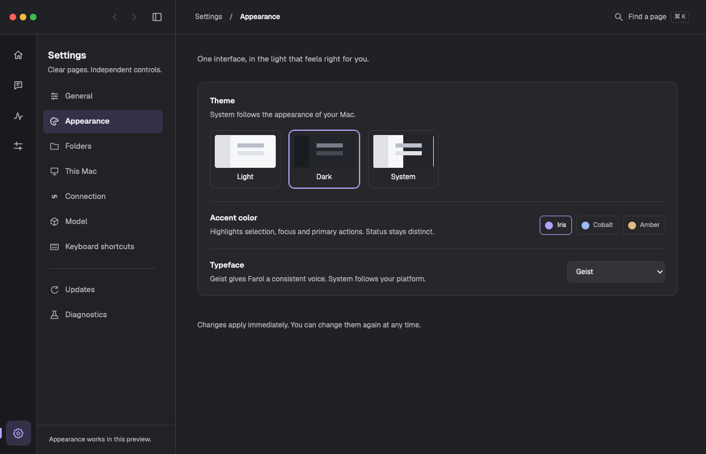
Iris remains changeable independently of the Dock identity.
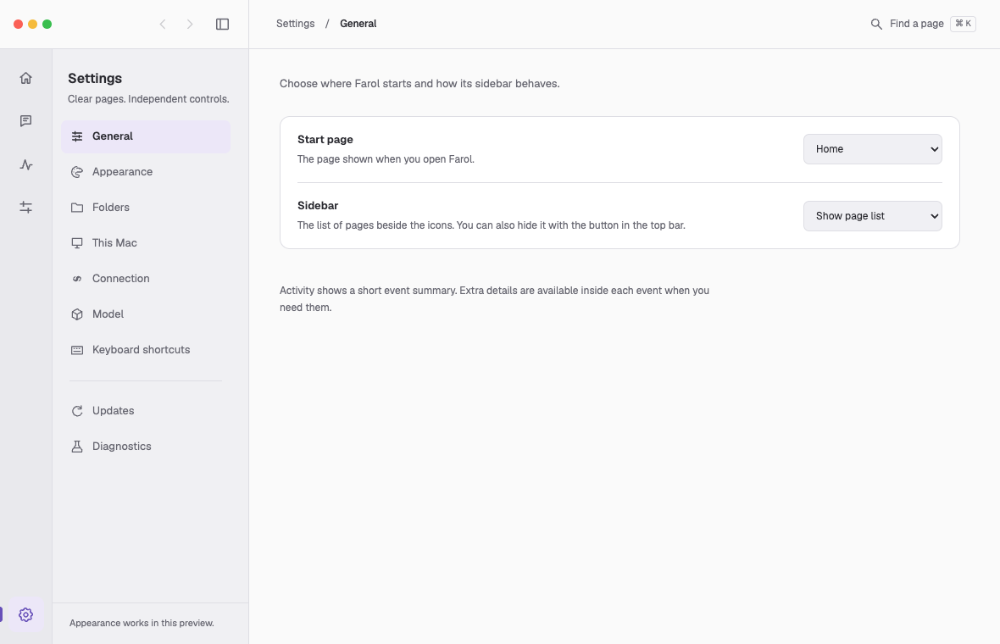
Start page and Sidebar. Extra Activity fields belong inside an event.
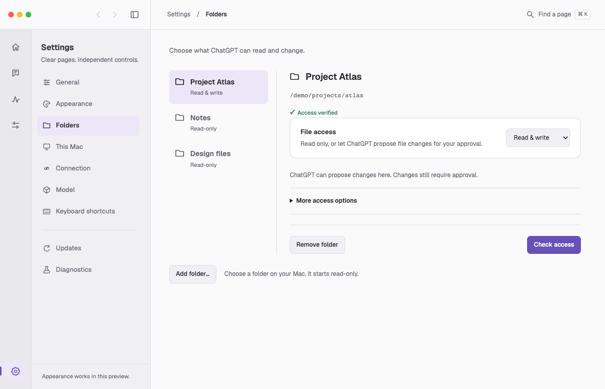
Native folder selection; approval still applies to file changes.
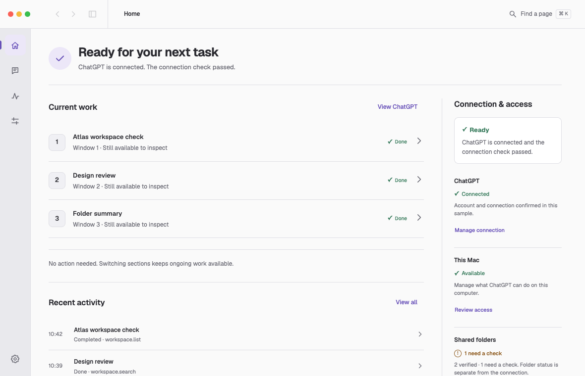
Connection verified; a folder that needs a check remains separately visible.
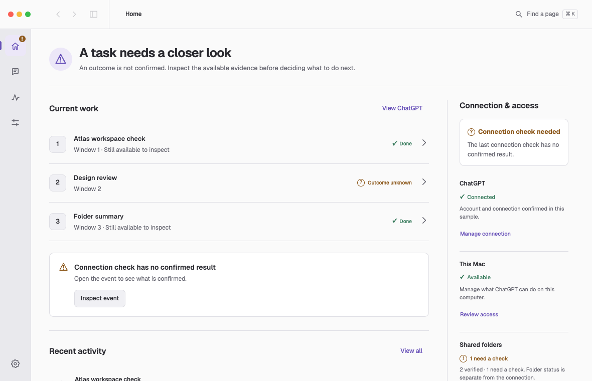
A local service does not turn an unknown result into success.
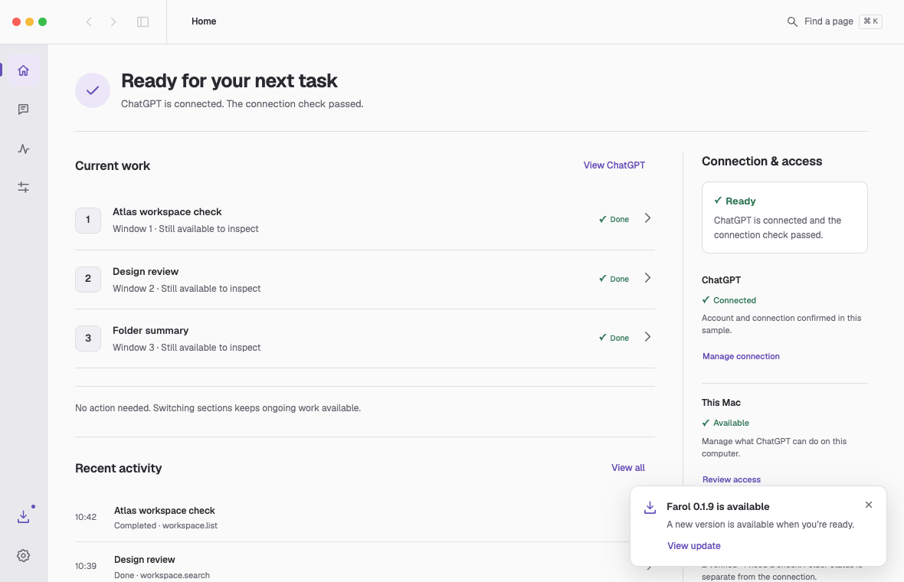
No forced modal. After acknowledgement, manual update review remains available.
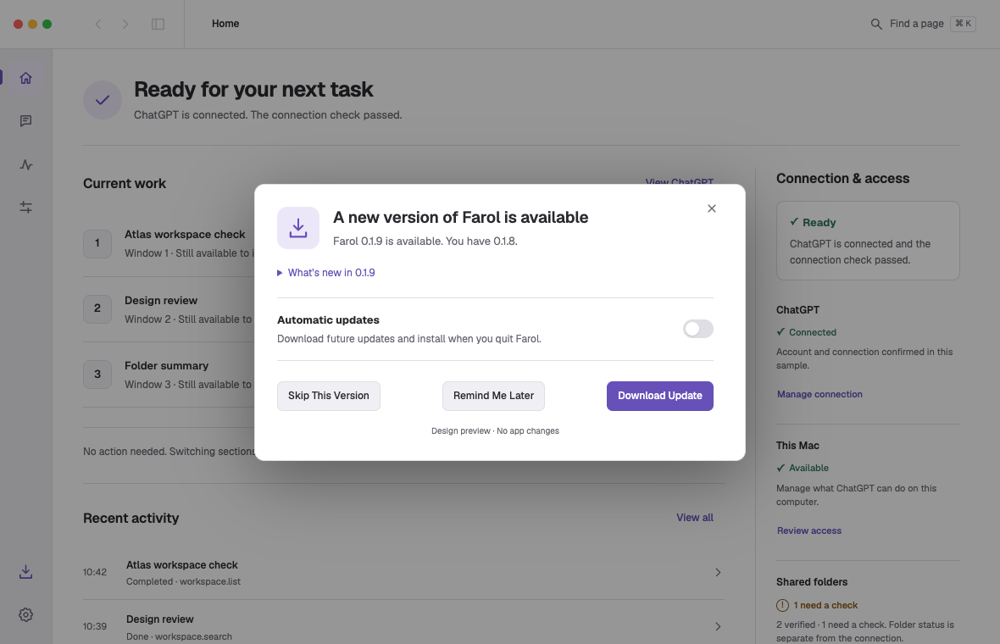
Version comparison, release notes and one compact automatic preference.
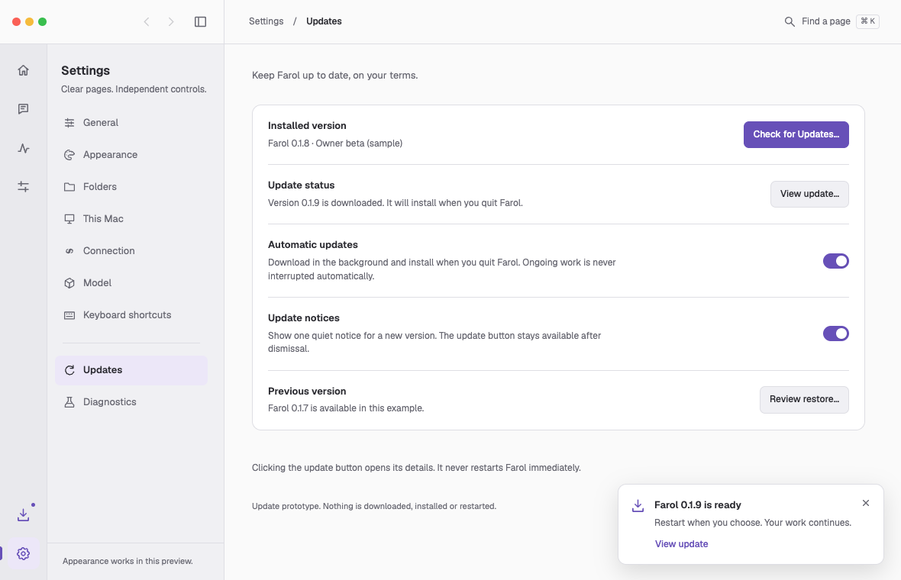
Download in the background; install on a normal app quit.
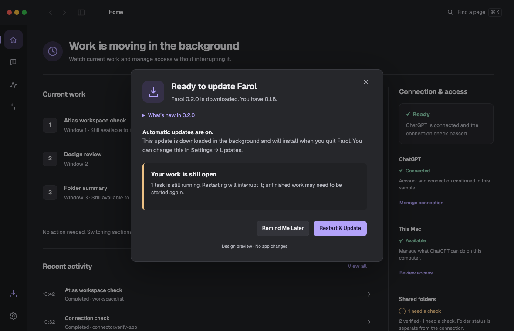
Click reviews the downloaded update. It does not immediately restart.
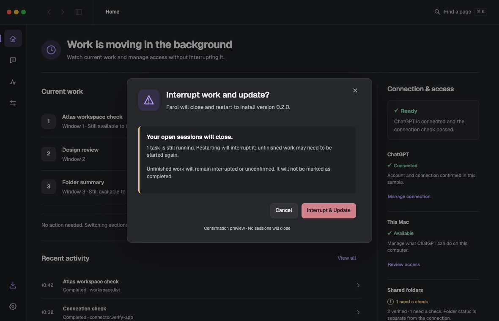
An explicit confirmation permits interruption. Cancel receives initial focus.
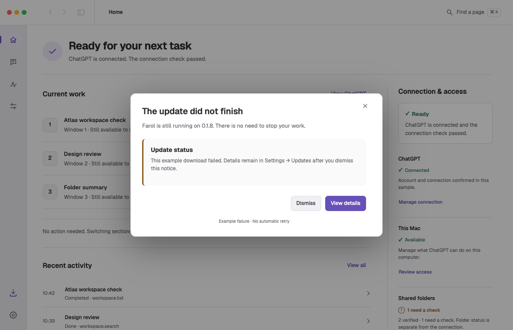
After review, the warning becomes a neutral update-status entry.
Dock icon pending: the three glossy material studies below were rejected. Preserve the current production icon and explore a simpler replacement separately. Read the owner decision.
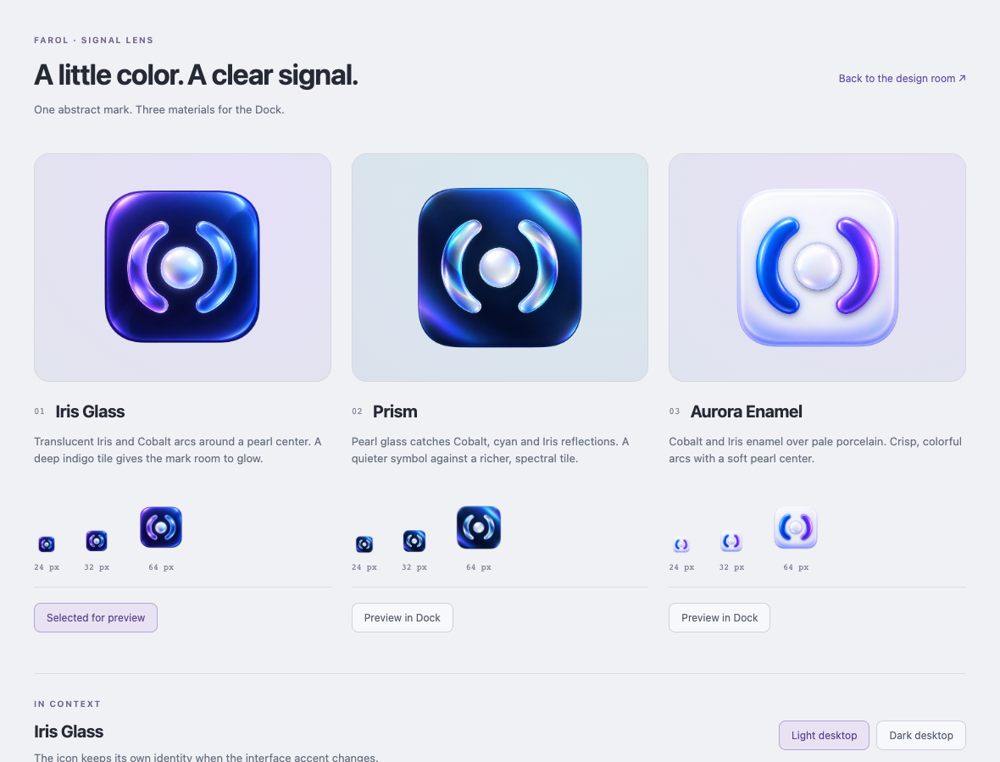
Iris Glass, Prism and Aurora Enamel. No yellow center.
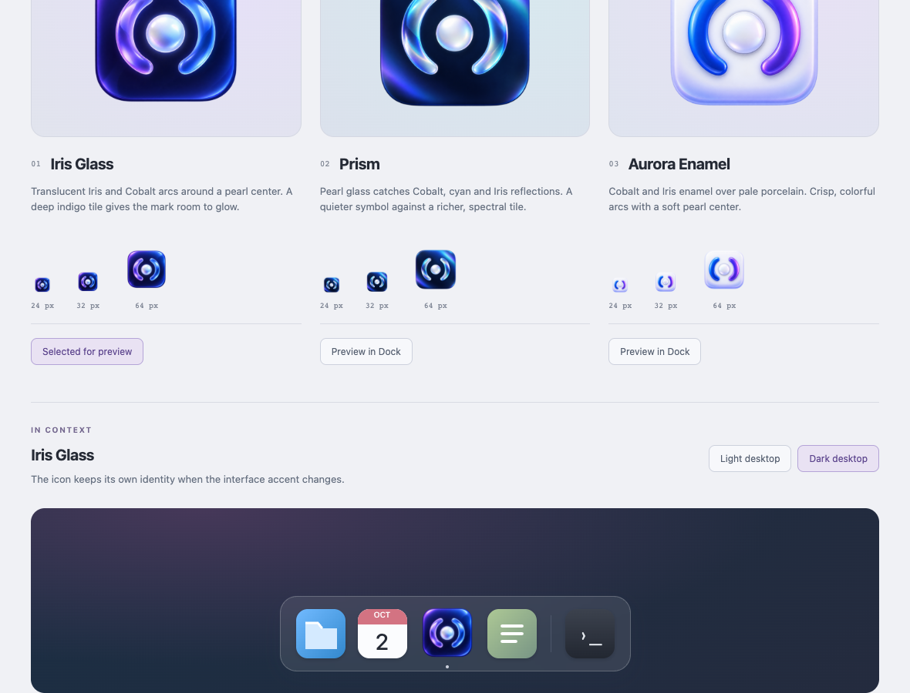
Switch the selected icon and desktop backdrop.
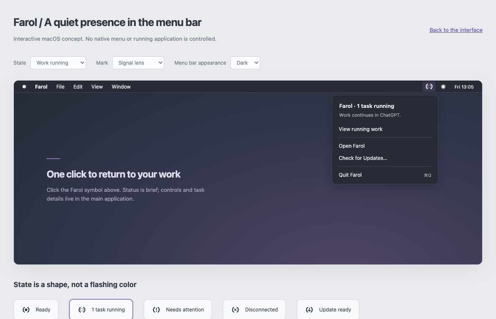
Status and one-click access back to Farol. Full control stays in the app.
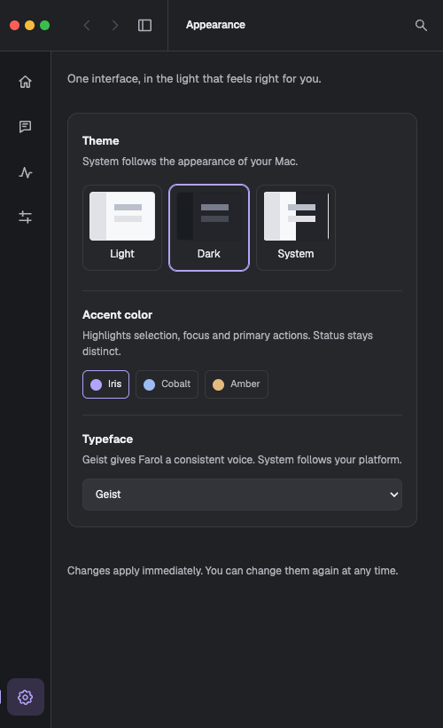
The page list becomes a sidebar overlay.
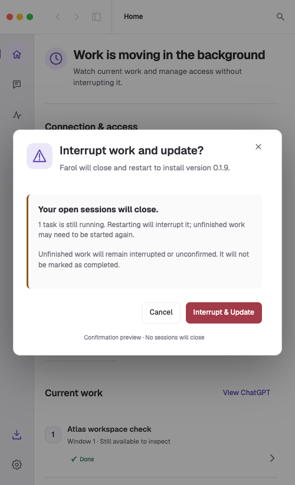
Cancel and Interrupt & Update stay visible.
Synthetic data and design behavior only. No live ChatGPT, download, installation or native menu is connected. Update preferences persist only within the preview browser origin. Opening a confirmation example requires clicking Restart & Update in its review sheet.
Implementation contract and verification · Revision 3 · Revision 2 · Revision 1